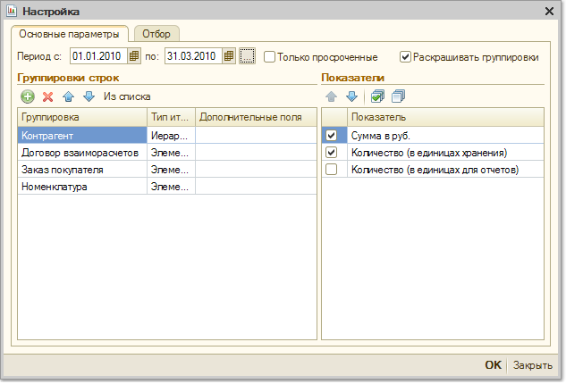

Отчет предназначен для учета номенклатурных позиций, переданных на реализацию комиссионерам. Также в этом отчете отслеживается состояние взаиморасчетов с комиссионерами. Таким образом, в одном отчете можно получить полную информацию о том, какие товары были отданы на реализацию комиссионерам, сколько из них было реализовано, какое комиссионное вознаграждение было начислено, и сколько заплатил комиссионер компании за реализованные им товары.

Если в настройках отчета установить флаг "Только просроченные", то в отчет будет выведена информация только о тех комиссионерах, которые не оплатили во время реализованный товар. Просроченность оплаты определяется только по тем документам , которые оформлены по договору с установленным видом взаиморасчетов "По расчетным документам". Просроченность оплаты вычисляется в соответствии с параметром "Число дней задолженности".
С помощью группировок, представленных в настройках отчета, можно детализировать информацию в отчете до уровня документов совершивших хозяйственную операцию:
Отчет может быть сгруппирован по конкретным позициям номенклатуры ("Номенклатура").
Кроме того отчет можно получить в разрезе характеристик номенклатуры (цвет, размер, габариты и т.д), серий номенклатуры (сертификат, серийный номер, срок годности), а также в разрезе различных свойств и категорий номенклатуры.
В качестве показателей отчета используется количество (в единицах хранения остатков) и сумма (в валюте управленческого учета).
С помощью установки параметров отбора, представленных в отчете можно отобрать информацию по конкретному комиссионеру, группе комиссионеров, произвольному списку комиссионеров, по комиссионерам, имеющим определенные свойства и категории.
В таблице сформированного отчета имеются следующие графы: